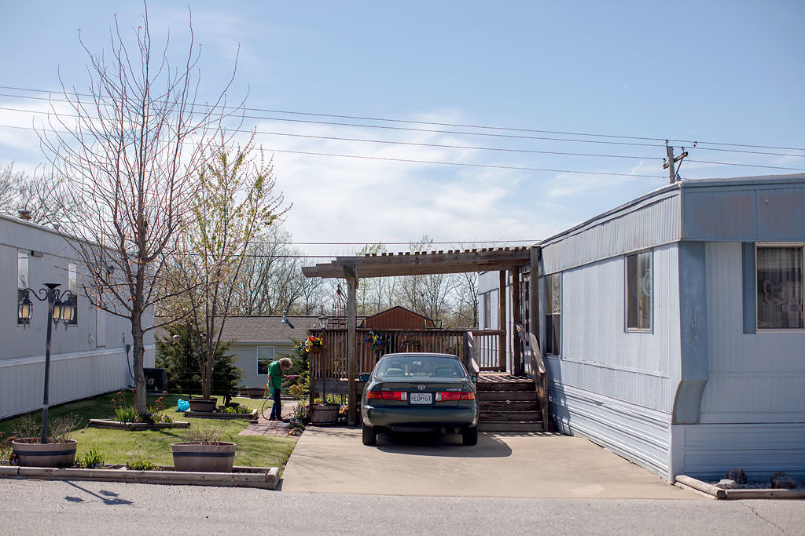

On a sunny spring afternoon in northeast Columbia, Shirley Colby nestled her hand into an oversized pair of gloves, slipped on rubber sandals — red, worn-in — and readied her shovel. There she was, on one of the first unforgivingly steamy days of April tending to the garden beside her home.
As a young girl and her brother walked home from school, Colby perked up and hollered. “Hi there,” Colby said, persisting her weed pulling.
Colby is a neighborhood-described “hoot” in Stonegate Mobile Home Community, where she’s lived for years. She zooms around town, driving herself, volunteering daily and serving the Columbia community.
Oh, and she’s 93 years old.
“Well, I just hope I have a few more years,” she said. “I’m not quite ready, and I have things to do.”
When the nest emptied, Colby says her restless inclinations restored from memory, previously supplanted by motherhood and marriage. Colby says she must stay active to combat her loneliness. “It all makes me get up in the morning, get dressed and get moving,” she said. “I don’t want to be a couch bum.”
Whether it’s volunteering Mondays and Fridays at Boone Hospital, helping at Columbia’s Senior Center on Tuesdays and Thursdays, going to bible study on Wednesdays and church on Sundays, she constantly keeps busy. “Everybody’s always saying I work too much or volunteer too much, but that’s just silly. I’ve worked all my life, so it’s just my way of living by now.”
Equally important to Colby is her sense of community. “It makes me feel wonderful to drive and do things with people.” Colby is a member of two gardening organizations and coordinates a monthly birthday club with a dozen other women. “We just get together, eat and read our cards,” she said. “It’s great to see everyone.”
Said Colby, who, at barely 5 feet tall, walks with no assistance: “I just feel very lucky that even at my age, I can still do it. A lot of people are surprised of that, I’m sure. I really am.”
Colby has always been busy. As a mother and wife, she has lived in California, Arizona and Missouri and worked along the way. With inconsistent, bumpy support from her first and second husbands, she says she was the rock for her three children. “I went to work, did housework and was home to make dinner,” she said. “I wish my family would have stayed closer together, but it worked.”
As time passed, Shirley says she has become known for her resilience and active lifestyle. “You know that Shirley, she’s a rock star,” longtime friend Kay Henderson said.
Colby’s response? “I just make (it) a day at a time, hope I have a tomorrow,” she said with a chuckle.